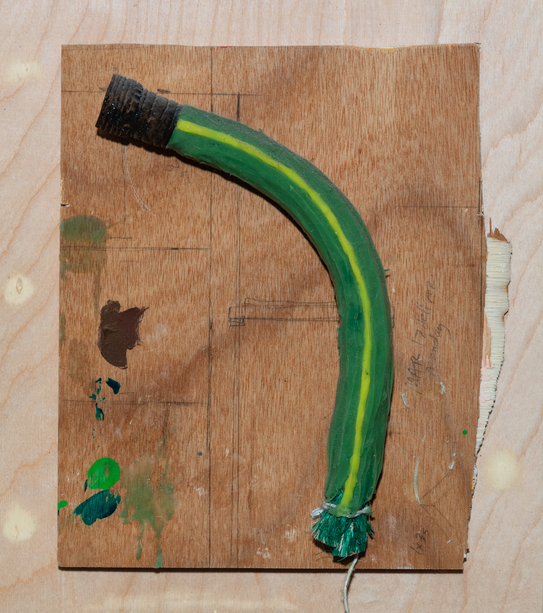

Peridot Green
our seasonal salon
American Cyborg, LLC
©2025
Our fifth salon tends to our organization’s garden. We survey the grounds, test the soil, and consider our ecosystem. We create custom terraria with natural objects we’ve found during our travels.
We consider the concept of a shared sacred space that is both protected and exposed.

This is a preliminary materials test for a series of sculptures of water hoses made by Tamara Johnson in 2015-2017.
Johnson refers to the water hose as an umbilical cord between the house and the garden.